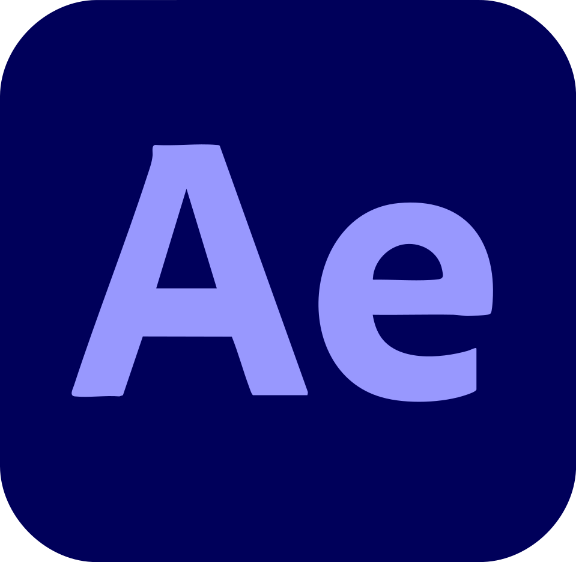
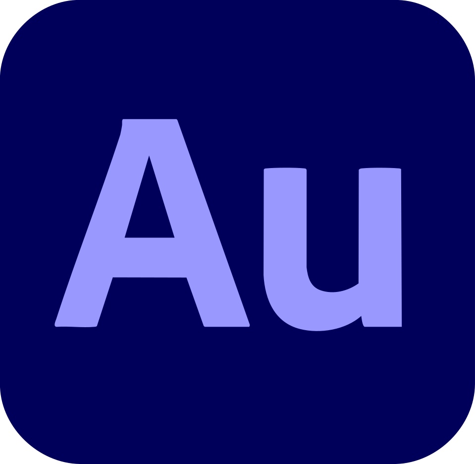

Comment donner envie de découvrir davantage de contenus scientifiques à une génération qui passe plus de temps sur les réseaux sociaux que devant des documentaires ?
Pour y répondre, j'ai imaginé une expérience numérique reliant contenus courts des réseaux sociaux et contenus scientifiques approfondis de National Geographic, avec pour objectif de transformer une curiosité rapide en véritable envie d'apprendre.
Pour concrétiser cette approche, je m'appuie sur le paradoxe des jumeaux, un phénomène surprenant issu de la relativité restreinte, qui capte rapidement l'attention et amorce cette curiosité.

Adobe After Effects
Adobe AuditionCette vidéo, réalisée avec Adobe After Effects, Illustrator, Audition et Photoshop, a pour but d'inciter les jeunes à aller découvrir la réponse à ce phénomène intriguant sur la web app dédiée, qui explique en profondeur le paradoxe des jumeaux.
Développée avec Visual Studio Code en HTML, CSS et JavaScript, cette web app explique les fondamentaux du paradoxe des jumeaux, puis redirige progressivement vers des contenus National Geographic plus approfondis, répondant ainsi à la problématique initiale du projet.
Ce webdocument, conçu avec Adobe InDesign, prolonge l'expérience pour les plus curieux souhaitant approfondir davantage mon projet de fin d'études.